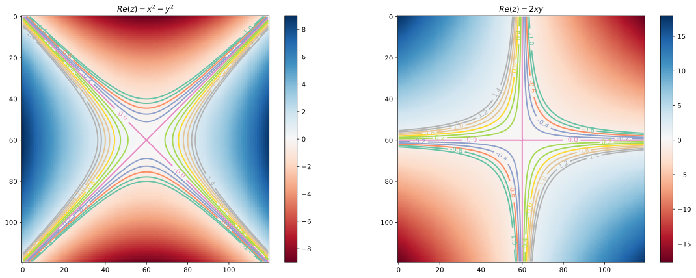
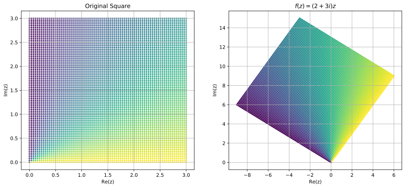
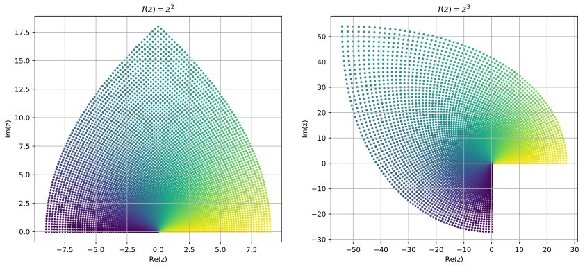
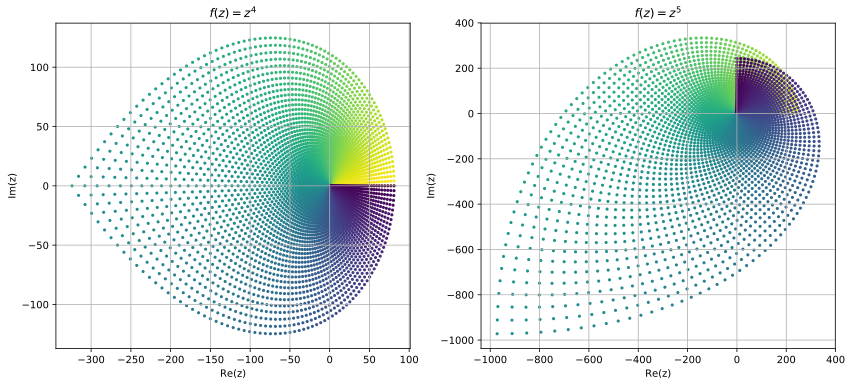
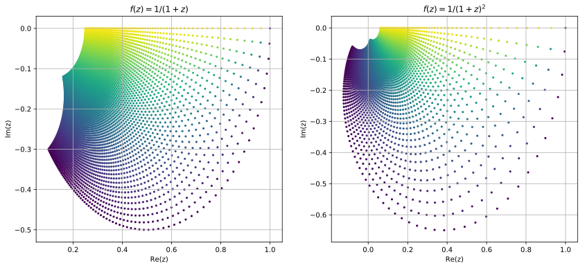
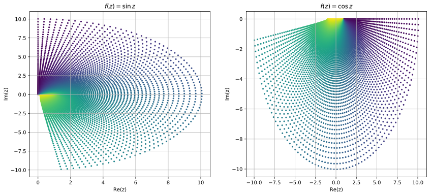
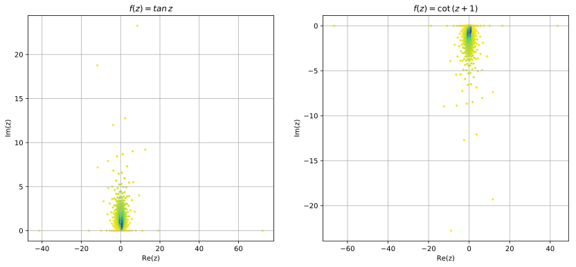
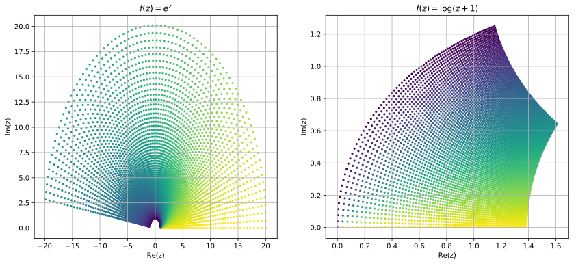

Function
%matplotlib inline %config InlineBackend.figure_format = 'svg' import numpy as np import matplotlib.pyplot as plt import sympy as sp sp.init_printing()
After learning about complex numbers, now we are in position to learn about functions that map complex numbers to complex number, i.e., . If , then can be written as Where , is called the real part and is called the imaginary part of a complex valued funcion .
x, y, z = sp.symbols("x y z") z = x+1j*y f = sp.Function("f") f = z**2 # Lambda(z, z**2) sp.collect(f.expand(), 1j)
from numpy import exp,arange from pylab import meshgrid,cm,imshow,contour,clabel,colorbar,axis,title,subplot,show,figure # the function that I'm going to plot def z_real(x,y): return (x**2 - y**2) def z_imag(x,y): return 2*x*y x = arange(-3.0,3.0,0.05) y = arange(-3.0,3.0,0.05) X,Y = meshgrid(x, y) # grid of point Z_real = z_real(X, Y) # evaluation of the function on the grid Z_imag = z_imag(X, Y) figure(figsize=(19,7)) subplot(1,2,1) im = imshow(Z_real,cmap=cm.RdBu) # drawing the function # adding the Contour lines with labels cset = contour(Z_real,arange(-1,1.5,0.2),linewidths=2,cmap=cm.Set2) clabel(cset,inline=True,fmt='%1.1f',fontsize=10) colorbar(im) # adding the colobar on the right # latex fashion title title('$Re(z)=x^2-y^2$') subplot(1,2,2) im = imshow(Z_imag,cmap=cm.RdBu) # drawing the function # adding the Contour lines with labels cset = contour(Z_imag,arange(-1,1.5,0.2),linewidths=2,cmap=cm.Set2) clabel(cset,inline=True,fmt='%1.1f',fontsize=10) colorbar(im) # adding the colobar on the right # latex fashion title title('$Re(z)=2xy$') show()

Now we try to visualize some of the functions in complex domain. Visualizing complex functions are not easy because it require dimensional space to plot a complex functions, and most of us can't visualize dimensional space. Other way is to look at the image different shapes of complex plane under these mappings. Here we look at the image of a square region under some common mapping.
def fun_plot(f): u = np.linspace(0, 3, 80) v = np.linspace(0, 3, 80) uu, vv = np.meshgrid(u, v) z0 = uu + 1j * vv z = f(z0) T = np.arctan2(uu,vv) plt.scatter(np.real(z), np.imag(z),c=T, s=10, lw = 0) plt.xlabel('Re(z)') plt.ylabel('Im(z)') plt.grid(True) plt.figure(figsize=(14,6)) plt.subplot(1,2,1) fun_plot(lambda z: z) plt.title('Original Square') plt.subplot(1,2,2) fun_plot(lambda z: z*(2+3*1j)) plt.title('$f(z)=(2+3i)z$') plt.gray plt.show()

plt.figure(figsize=(14,6)) plt.subplot(1,2,1) fun_plot(lambda z: z**2) plt.title('$f(z)=z^2$') plt.subplot(1,2,2) fun_plot(lambda z: z**3) plt.title('$f(z)=z^3$') plt.gray plt.show()

plt.figure(figsize=(14,6)) plt.subplot(1,2,1) fun_plot(lambda z: z**4) plt.title('$f(z)=z^4$') plt.subplot(1,2,2) fun_plot(lambda z: z**5) plt.title('$f(z)=z^5$') plt.gray plt.show()

plt.figure(figsize=(14,6)) plt.subplot(1,2,1) fun_plot(lambda z: 1/(z+1)) plt.title('$f(z)=1/(1+z)$') plt.subplot(1,2,2) fun_plot(lambda z: 1/(z+1)**2) plt.title('$f(z)=1/(1+z)^2$') plt.gray plt.show()

from numpy import sin, cos, tan, exp, log plt.figure(figsize=(14,6)) plt.subplot(1,2,1) fun_plot(sin) plt.title('$f(z)=\sin \,z$') plt.subplot(1,2,2) fun_plot(cos) plt.title('$f(z)=\cos \,z$') plt.gray plt.show()

plt.figure(figsize=(14,6)) plt.subplot(1,2,1) fun_plot(tan) plt.title('$f(z)=tan \,z$') plt.subplot(1,2,2) fun_plot(lambda z: 1/tan(z+1)) plt.title('$f(z)=\cot \,(z+1)$') plt.gray plt.show()

plt.figure(figsize=(14,6)) plt.subplot(1,2,1) fun_plot(exp) plt.title('$f(z)=e^z$') plt.subplot(1,2,2) fun_plot(lambda z: log(z+1)) plt.title('$f(z)=\log(z+1)$') plt.gray plt.show()
